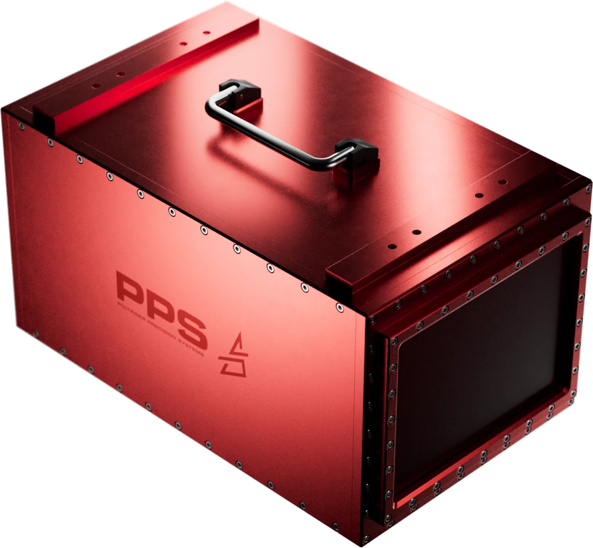
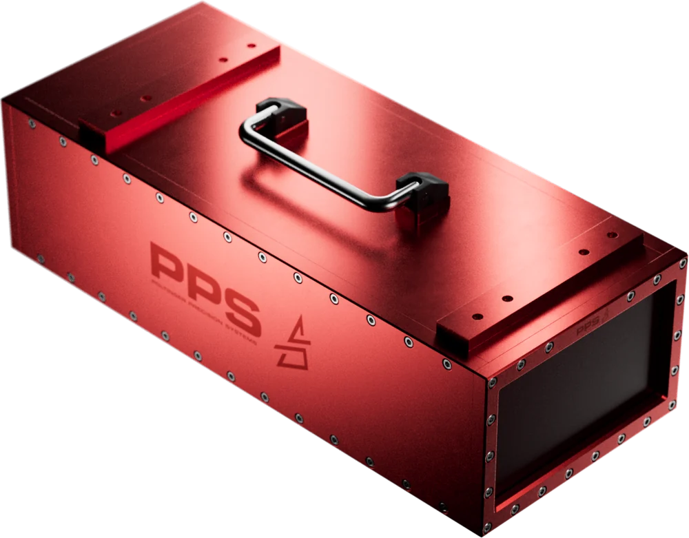
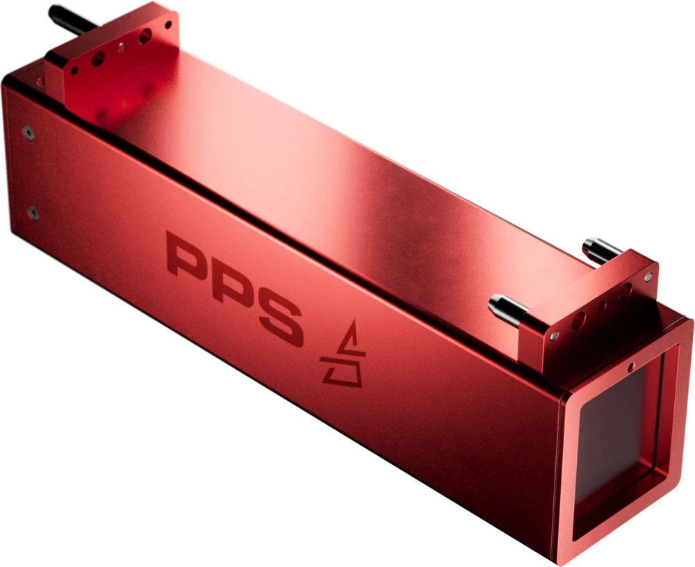

Referenz · Gehäusebau
Lasertargets für Tunnelbohrmaschinen: das Gehäuse kommt von uns
PPS Poltinger Precision Systems aus Feldkirchen baut Lasertargets und Steuersysteme für Tunnelbohrmaschinen. Das Gehäuse der Baureihe RED ELT haben wir komplett übernommen: von A bis Z konstruiert, entwickelt und gefertigt.
- Konstruktion
- Entwicklung
- Fertigung
-

RED ELT -

RED ELT mini -

RED ELT Nano